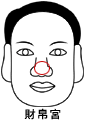

��帛�m |
（鼻子部位） |
一、鼻子窄小肉薄而陷的人
1．身�w健康不佳。
2．��帛�^差、作事易受阻��、反覆且困�y。
3．如�榕�人、其丈夫必定�L得不美。
二、鼻子上有�M�y的人
1．易得暗疾、不易治��。
2．婚姻�c事�I易造成失� �
三、鼻子有直�y的人
1．易�轲B子或收他人�轲B子
2．如在�暑^上的直�y，�t是五�R分�萍y，注意交通外��。
四、鼻�诺捅穷^尖的人
1．��帛不佳。
2．身�w不佳。
3．如�榕�人�]有好的丈夫�\。
五、鼻孔仰露的人
1．���碡�去、不易守��。
2．�槿溯^浪�M、不�楣�制。
六、鼻子��曲�喙�的人
1．婚姻易遭失� �
2．三十五至四十�q�r身�w不佳。
3．�������r有挫折。
七、�暑^太接近唇��的人
1．��世����差、眼光�\。
2．做事�]有原�t、易受�恐啤�
八、鼻子�馍�赤�t的人
1．象徵是非口舌、犯小人、破��。
2．�L期赤�t、必�����F狐��。
九、鼻子有黑�m的人
1．生病的�E象。
2．不易存��、��源不佳、有破���E象。
3．宜防水�y、或�I�K有疾病。
十、鼻子�S��直的人
1．表示��帛富足。
2．表示健康�L�邸�
3．表示地位�c名望日��上升。
十一、鼻子�A�蚋哓�的人
1．�A���t多福、生活享受美好。
2．高���t事�I崛起、地位崇高。
十二、鼻子端方整�R的人
1．有��大的活力、�氖赂黜�工作。
2．如�榕�人必嫁一��好丈夫。
十三、鼻子�馍����傻娜�
1．表示目前��源�V�M、事�I��遂。
2．如�S亮光�G如紫、更是�f事如意��富大增。